Опыт работы - 11 лет
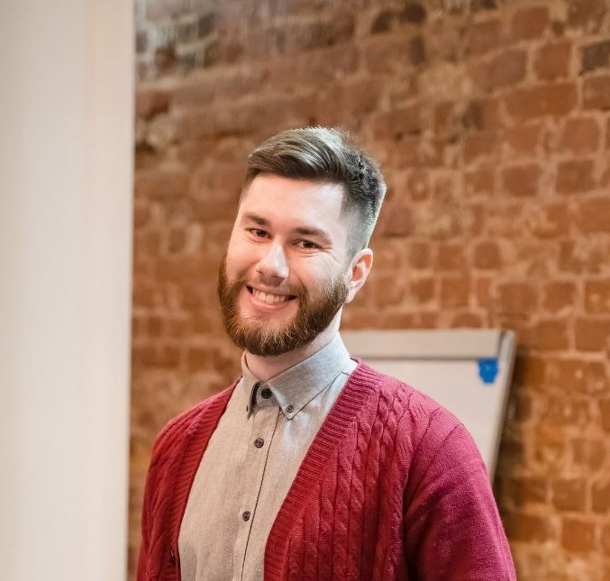
IT-специалист с опытом работы 10 лет и страстью к преподаванию.
Специализируюсь на VR/AR-разработке и системном администрировании.
Преподаю в Центре цифрового образования «IT-Куб»,
где помогаю детям 7-17 лет осваивать современные технологии
Постоянно стремлюсь к развитию навыков и компетенций, карьерному росту.
Общий стаж работы - более 11 лет.
Повышения квалификации, сертификаты и благодарности
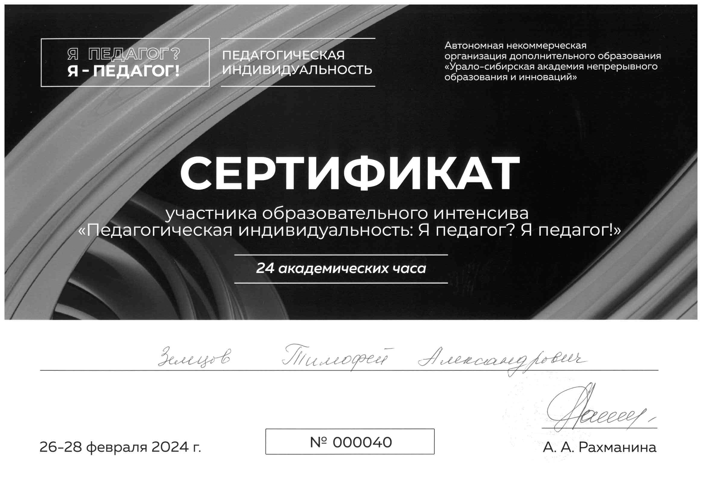
"Педагогическая индивидуальность"

В центрах доп.образования IT-Куб

В условиях цифровизации образования
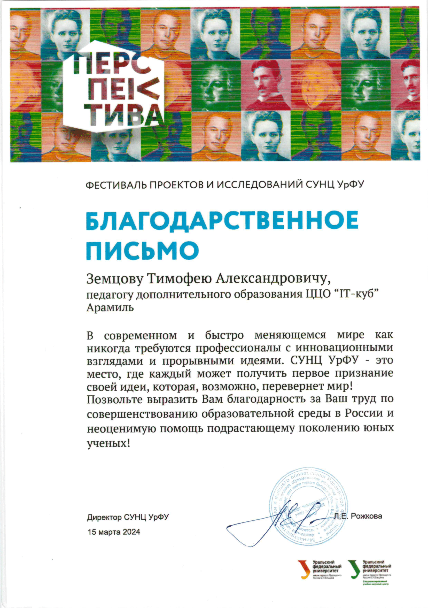
СУНЦ УрФУ
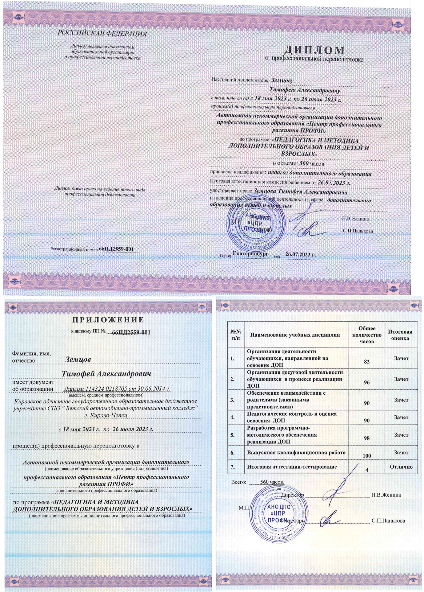
Профессиональная переподготовка
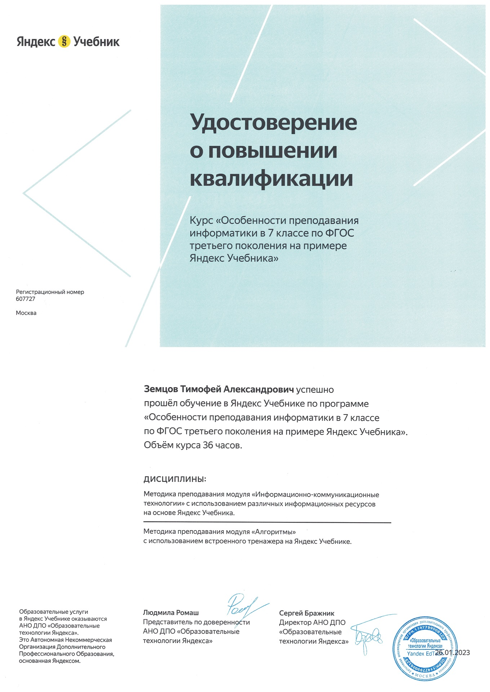
По ФГОС третьего поколения
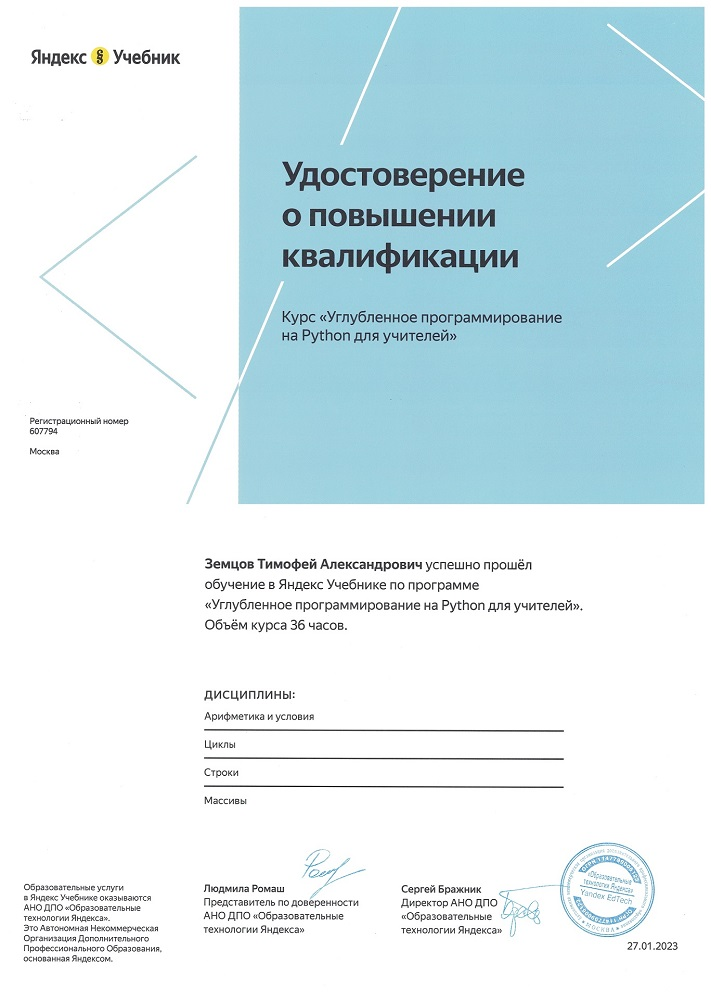
Для учителей
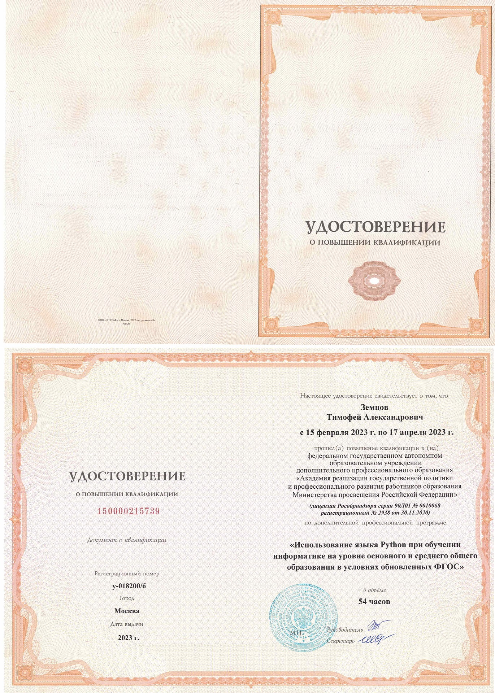
В условиях обновленных ФГОС
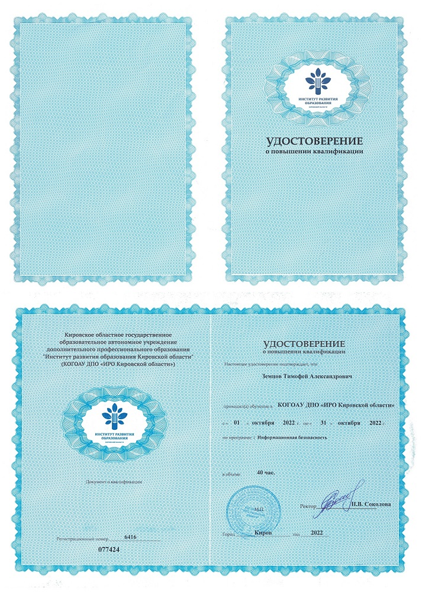
ИРО Кировской области
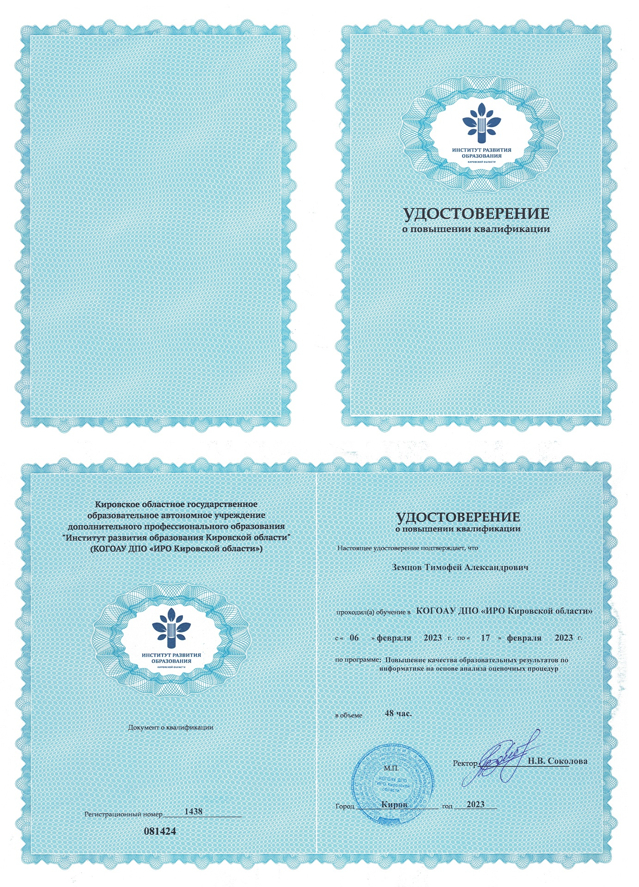
По информатике на основе анализа оценочных процедур
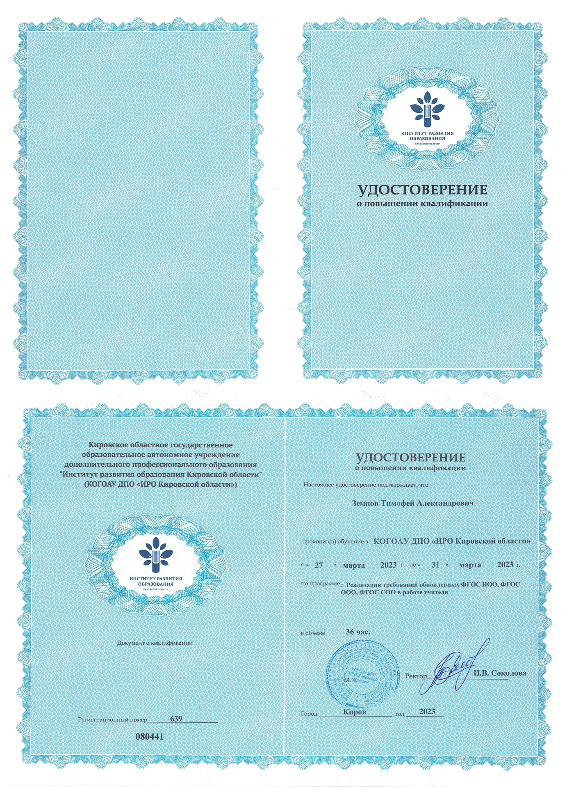
НОО, ООО, СОО в работе учителя
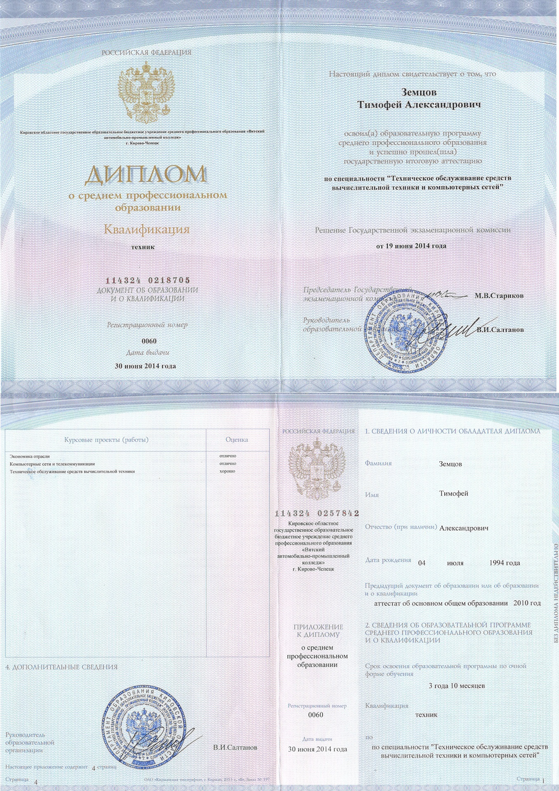
И компьютерных сетей
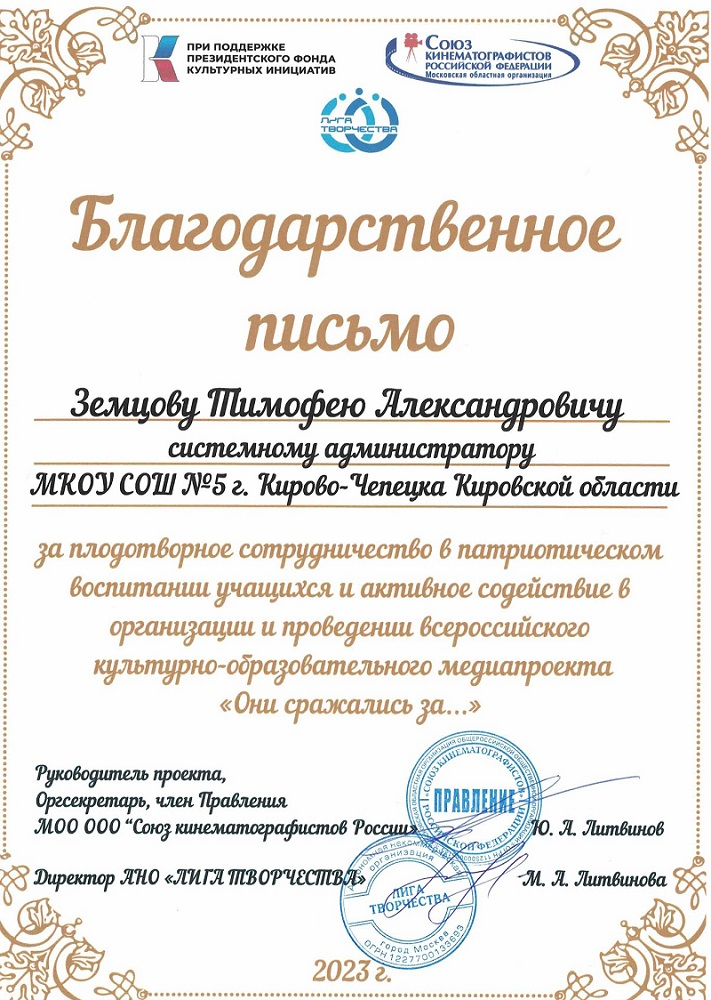
Всероссийский проект "Они сражались за..."
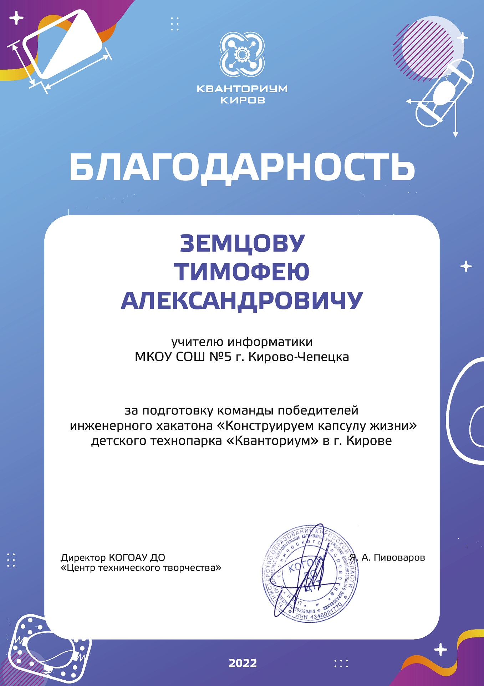
От Кванториума
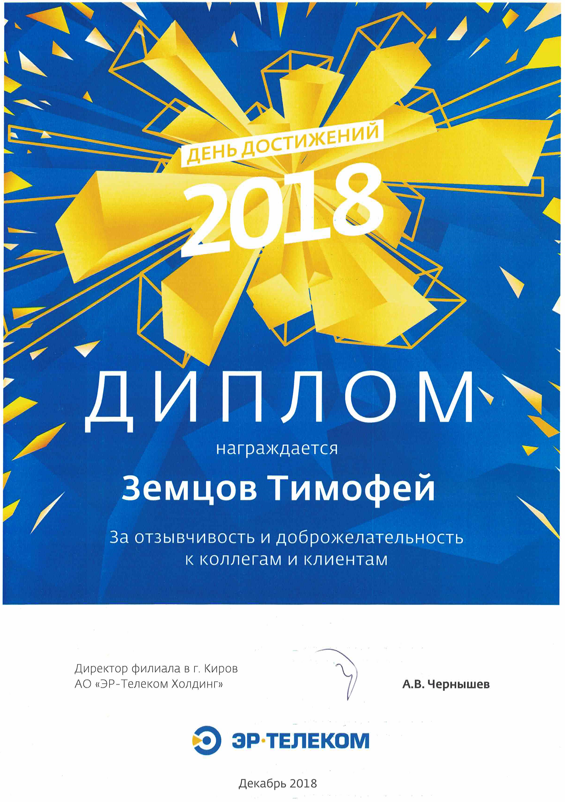
ЭР-Телеком Холдинг
Проекты учеников и их успехи в конкурсах 2024-2025 учебного года
Областной конкурс "ЮнитиДжем"
🥈 Серебряные призеры
📍 г. Верхняя Пышма
Индивидуальный проект
Игра о путешествии во времени, повзволяющая посмотреть на потенциальный вид городов и технологии будущего.
Областной хакатон "PlayDigitalArt"
🏅 Призеры
📍 г. Екатеринбург
Команда: 5 человек
"SkibProtection"
Приложение цифрового искусства - Психологическая VR-игра для самопознавания и раскрытия осознания.
Всероссийский хакатон "Обучаюсь. Проектирую. Программирую. Будущее" (отборочный)
🌟 Участники отборочного этапа
📍 Онлайн
Команда: 3 человека
"TeaXR"
VR-симулятор выживания на необитаемом острове с сюжетом и катсценами.
Всероссийский конкурс "Прикоснись к культуре сахалинских корейцев"
🌟 Финалисты
📍 г. Санкт-Петербург, Онлайн
Команда: 2 человека
"SkibSigma"
Образовательный VR-симулятор для изучения традиций корейской кухни и культуры через интерактивное приготовление национального блюда.
Всероссийский хакатон "Обучаюсь. Проектирую. Программирую. Будущее" (финал)
🥈 Серебряные призеры
📍 г. Нижний Новгород
Команда: 4 человека
"TeaXR"
Профориентационное VR-приложение для знакомства с деятельностью Уральского Завода Гражданской Авиации на примере одного из цехов.
Всероссийский хакатон "ProVR" (отборочный)
🌟 Участники отборочного этапа
📍 Онлайн
Команда: 4 человека
"PixelForge"
Образовательный VR-симулятор для знакомства с компонентами и обучения сборке персонального компьютера.
Всероссийский хакатон "ProVR" (финал)
🥈 Серебряные призеры
📍 г. Оренбург
Команда: 4 человека
"PixelForge"
VR-приложение для знакомства с предприятием по обработке и приготовлению мясных изделий, а также оборудовании и продукции там производимым.
КПК "Создание виртуальных музеев"
📚 Учебный проект
📍 Онлайн
Индивидуальный проект
Виртуальная экскурсия по музею современных VR/AR технологий с интерактивными экспонатами и демонстрацией возможностей виртуальной реальности.
Всероссийская Национальная Техническая Олимпиада Джуниор
🌟 Финалисты регионального и всероссийского этапов
📍 г. Москва
Индивидуальное участие, 2 человека
Участие в финале всероссийской олимпиады по VR-разработке среди школьников. Направление: разработка виртуальной реальности.
Всероссийский конкурс "Оставь VR метку на карте России"
🥇 Первое место
📍 г. Санкт-Петербург, онлайн
Команда: 2 человека
"SkibHobbit"
Виртуальная экскурсия по историческим местам города Арамиль с интерактивными рассказами о местной истории.
Всероссийский конкурс "Нарядим 3D-Ёлку?"
🏅 Призер
📍 г. Санкт-Петербург, онлайн
Индивидуальный проект
Детализированная 3D-модель новогодней ёлки с праздничными украшениями и новогодним окружением, созданная в Blender.
Всероссийский хакатон "VRAR Planet"
⭐ Особый диплом за технически сложный проект
📍 г. Великий Новгород, онлайн
Команда: 4 человека
"SkibDream"
Интерактивное VR-приложение для проектирования и визуализации домов мечты, для предприятия Фабрика Уютных Домов.
Всероссийский хакатон "FeVRARt" (отборочный)
📝 Участники отборочного этапа
📍 Онлайн
Команда: 3 человека
"SkibYulender"
Образовательная VR-игра для изучения основ управления беспилотными летательными аппаратами и их сборки.
Межрегиональный фестиваль "Техномарт", хакатон Play Digital Art 2025
⭐ Особый диплом "Прямо в сердце"
📍 г. Екатеринбург
Команда: 3 человека
"Каша с Арбузом"
VR-игра для знакомства с детскими мечтами.
Всероссийский "Varwin Хакатон 2025"
🥈 Серебряные призеры
📍 г. Санкт-Петербург
Команда: 5 человек
"Каша с Арбузом"
Виртуальная экскурсия по знаменитому детскому лагерю Артек с посещением корпуса Хрустальный и знакомством с его историей.
Итоговые проекты, конкурс "Проекторий"
📝 Участник
📍 г. Арамиль
Индивидуальный проект
VR-экскурсия по виртуальному музею музыкальных инструментов с возможностью прослушивания звучания и изучения истории каждого инструмента.
Итоговые проекты, конкурс "Проекторий"
📝 Участник
📍 г. Арамиль
Индивидуальный проект
AR-приложение для изучения заболеваний зубов и полости рта с интерактивными 3D-моделями и образовательным контентом.
Итоговые проекты, конкурс "Проекторий"
📝 Участник
📍 г. Арамиль
Индивидуальный проект
Виртуальный музей памяти героев Великой Отечественной войны с интерактивными экспозициями и рассказами о подвигах.
Итоговые проекты, конкурс "Проекторий"
🥇 Первое место
📍 г. Арамиль
Команда: 3 человека
Интерактивная визуальная новелла о блокаде Ленинграда, рассказывающая историю через глаза девушки медика
Итоговые проекты, конкурс "Проекторий"
🥈 Второе место
📍 г. Арамиль
Команда: 4 человека
Виртуальная экскурсия по Екатеринбургскому техникуму химического машиностроения с демонстрацией учебных процессов и специальностей.
Итоговые проекты, конкурс "Проекторий"
🥈 Второе место
📍 г. Арамиль
Команда: 5 человек
3D модель потенциального благоустройства территории за ЦЦОД IT-Куб г.Арамиль с концепцией возрождения парка Голубкина и созданием зоны отдыха.
Моменты из моей преподавательской деятельности и проектов
Вы можете скачать мое подробное резюме в формате PDF, чтобы ознакомиться с полной информацией о моем профессиональном опыте, навыках и достижениях.
Скачать резюме